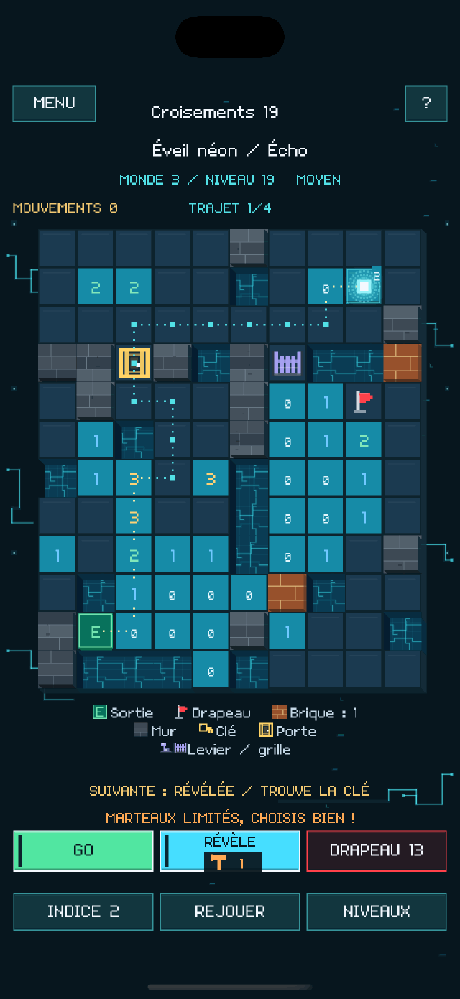

01
Préparez votre chemin
Observez les chiffres, marquez les mines et trouvez une route sans danger.
Disponible sur Google Play et l’App Store
Lis les chiffres, signale les mines et découvre un trajet sûr jusqu’à la sortie. Tu prépares le chemin. La lueur le suit.

Disponible sur Android et iOS
Déchiffrez les indices, signalez les mines, tracez un chemin sûr et guidez une petite lumière à travers des mondes mystérieux.

Observez les chiffres, marquez les mines et trouvez une route sans danger.

Clés, portails et obstacles donnent à chaque monde sa personnalité.

Commencez avec 60 niveaux gratuits, puis débloquez le jeu complet si vous le souhaitez.
Lumen Mine · YouTube
Découvrez ce court aperçu du jeu, puis explorez les captures et les différents mondes.
Explore les trois premiers mondes gratuitement. Un achat intégré unique débloque le jeu complet, soit 300 mondes et 6 000 niveaux au total.